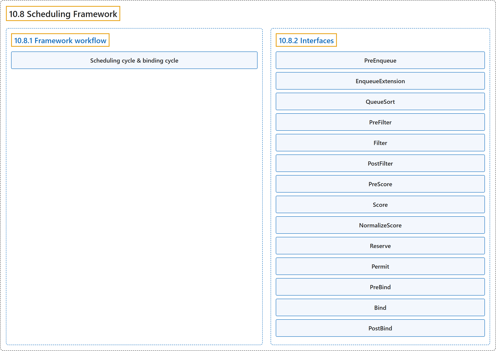

10.8 Scheduling Framework
Classification

Glossary
| Term | Definition | 中文翻译 | Source |
|---|---|---|---|
| 10.8 Scheduling Framework 调度框架 |
"The scheduling framework is a pluggable architecture for the Kubernetes scheduler." | 调度框架是一种可插拔架构，面向 Kubernetes 调度器。 | The Kubernetes Authors, n.d., "Scheduling Framework", para. 1 |
| 10.8.1 Framework workflow 框架工作流 |
"The Scheduling Framework defines a few extension points." | 调度框架定义了若干扩展点。 | The Kubernetes Authors, n.d., "Framework workflow", para. 1 |
| Scheduling cycle & binding cycle 调度周期与绑定周期 |
"The scheduling cycle selects a node for the Pod, and the binding cycle applies that decision to the cluster." | 调度周期为 Pod 选择节点，绑定周期把这一决定应用到集群。 | The Kubernetes Authors, n.d., "Scheduling cycle & binding cycle", para. 1 |
| 10.8.2 Interfaces 接口 |
(No definition) | （无定义） | The Kubernetes Authors, n.d., "Interfaces" |
| PreEnqueue PreEnqueue |
"These plugins are called prior to adding Pods to the internal active queue, where Pods are marked as ready for scheduling." | 这些插件在把 Pod 加入内部活动队列之前调用，Pod 在该队列中被标记为可调度。 | The Kubernetes Authors, n.d., "PreEnqueue", para. 1 |
| EnqueueExtension EnqueueExtension |
"EnqueueExtension is the interface where the plugin can control whether to retry scheduling of Pods rejected by this plugin, based on changes in the cluster." | EnqueueExtension 是一个接口，插件通过它控制是否重试调度被本插件拒绝的 Pod，依据是集群中的变化。 | The Kubernetes Authors, n.d., "EnqueueExtension", para. 1 |
| QueueSort QueueSort |
"These plugins are used to sort Pods in the scheduling queue." | 这些插件用于对 Pod 排序，在调度队列中。 | The Kubernetes Authors, n.d., "QueueSort", para. 1 |
| PreFilter PreFilter |
"These plugins are used to pre-process info about the Pod, or to check certain conditions that the cluster or the Pod must meet." | 这些插件用于预处理 Pod 的信息，或检查集群或 Pod 必须满足的某些条件。 | The Kubernetes Authors, n.d., "PreFilter", para. 1 |
| Filter Filter |
"These plugins are used to filter out nodes that cannot run the Pod." | 这些插件用于过滤掉节点，即那些无法运行该 Pod 的节点。 | The Kubernetes Authors, n.d., "Filter", para. 1 |
| PostFilter PostFilter |
"These plugins are called after the Filter phase, but only when no feasible nodes were found for the pod." | 这些插件在 Filter 阶段之后调用，但仅当没有为该 Pod 找到可行节点时。 | The Kubernetes Authors, n.d., "PostFilter", para. 1 |
| PreScore PreScore |
"These plugins are used to perform "pre-scoring" work, which generates a sharable state for Score plugins to use." | 这些插件用于执行“预打分”工作，生成可供 Score 插件使用的共享状态。 | The Kubernetes Authors, n.d., "PreScore", para. 1 |
| Score Score |
"These plugins are used to rank nodes that have passed the filtering phase." | 这些插件用于对节点排序，即那些通过了过滤阶段的节点。 | The Kubernetes Authors, n.d., "Score", para. 1 |
| NormalizeScore NormalizeScore |
"These plugins are used to modify scores before the scheduler computes a final ranking of Nodes." | 这些插件用于修改分数，在调度器计算节点最终排名之前。 | The Kubernetes Authors, n.d., "NormalizeScore", para. 1 |
| Reserve Reserve |
"A plugin that implements the Reserve interface has two methods, namely Reserve and Unreserve" |
实现 Reserve 接口的插件有两个方法，即 Reserve 和 Unreserve |
The Kubernetes Authors, n.d., "Reserve", para. 1 |
| Permit Permit |
"Permit plugins are invoked at the end of the scheduling cycle for each Pod, to prevent or delay the binding to the candidate node." | Permit 插件在每个 Pod 的调度周期结束时调用，用于阻止或推迟绑定到候选节点。 | The Kubernetes Authors, n.d., "Permit", para. 1 |
| PreBind PreBind |
"These plugins are used to perform any work required before a Pod is bound." | 这些插件用于执行所需的任何工作，在 Pod 绑定之前。 | The Kubernetes Authors, n.d., "PreBind", para. 1 |
| Bind Bind |
"These plugins are used to bind a Pod to a Node." | 这些插件用于把 Pod 绑定到一个节点。 | The Kubernetes Authors, n.d., "Bind", para. 1 |
| PostBind PostBind |
"This is an informational interface." | 这是一个信息性接口。 | The Kubernetes Authors, n.d., "PostBind", para. 1 |
References
The Kubernetes Authors. (n.d.). Scheduling Framework. Kubernetes Documentation. Retrieved October 31, 2026, from https://kubernetes.io/docs/concepts/scheduling-eviction/scheduling-framework/